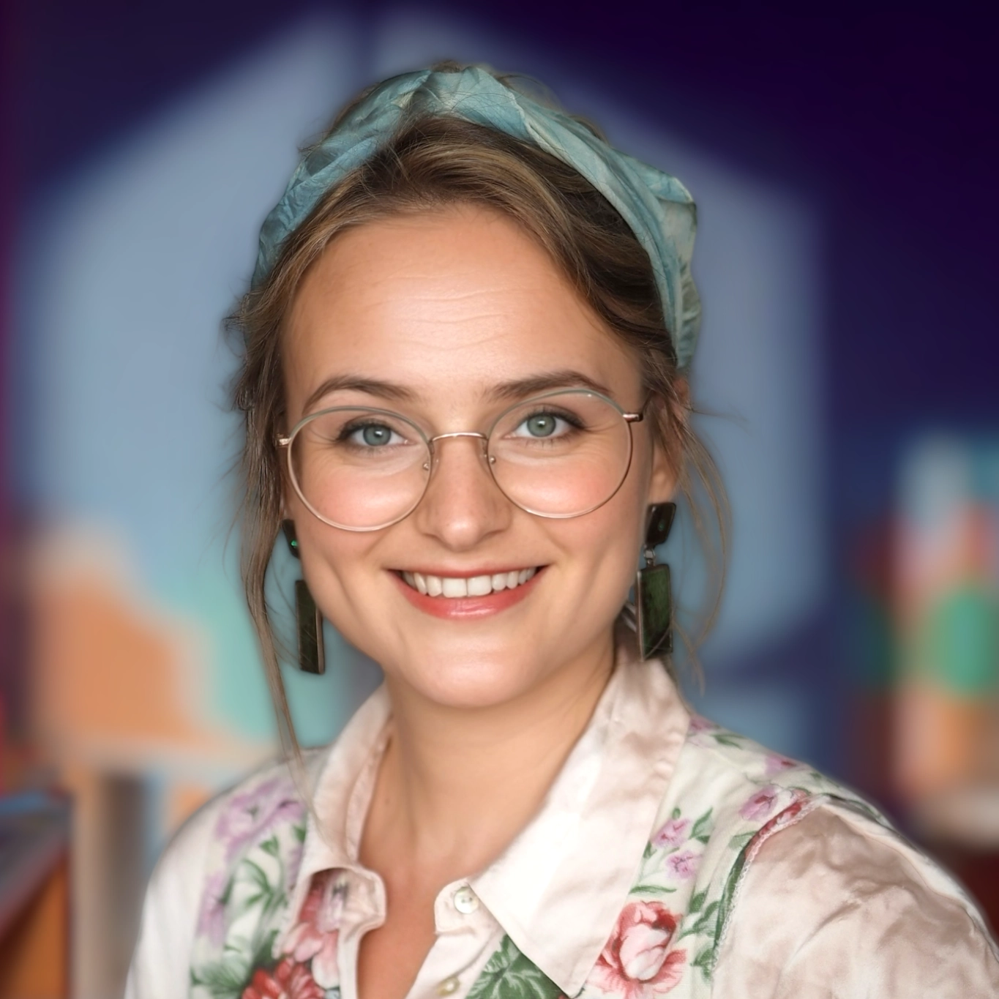

Portré helyeBajka Kinga Csengele
Waldorf-pedagógiai háttérrel dolgozó alkotó és drámafoglalkozás-vezető, a SVUNG – Bécsi Magyar Színkör alapító tagja, a BMI táborainak és kreatív programjainak rendszeres szervezője.
Szakmai háttér és legfontosabb tapasztalatok
Sepsiszentgyörgyön Waldorf-iskolába járt, majd Budapestre költözve a solymári Waldorf-tanárképzés négyéves nappali tagozatán szerzett diplomát. 2016 óta Bécsben él, a SVUNG – Bécsi Magyar Színkör alapító tagja. A Bécsi Magyar Iskolában óvodai, dráma-, kreatív és tábori programokat vezet, 2024-ben pedig egy gyerekeknek szóló suliújság-műhelyben a sajtóműfajokkal és a közös szerkesztőségi munkával is megismertette a résztvevőket.
A hozzá különösen közel álló területek
A Waldorf-pedagógia, a színpadi önkifejezés, a kézműves és vizuális alkotás, a történetmesélés, valamint azok a közösségi projektek, amelyekben a gyerekek ötletei valóban alakítják a programot.
Pedagógiai szemlélet
Foglalkozásaiban fontos a kíváncsiság, az önálló ötlet és a közös alkotás. A nyári táborok témáit is a gyerekek érdeklődéséhez igazítja; a célja nem egy előre gyártott „jó megoldás”, hanem olyan helyzetek teremtése, ahol a gyerekek kérdezhetnek, próbálkozhatnak és együtt hozhatnak létre valamit.